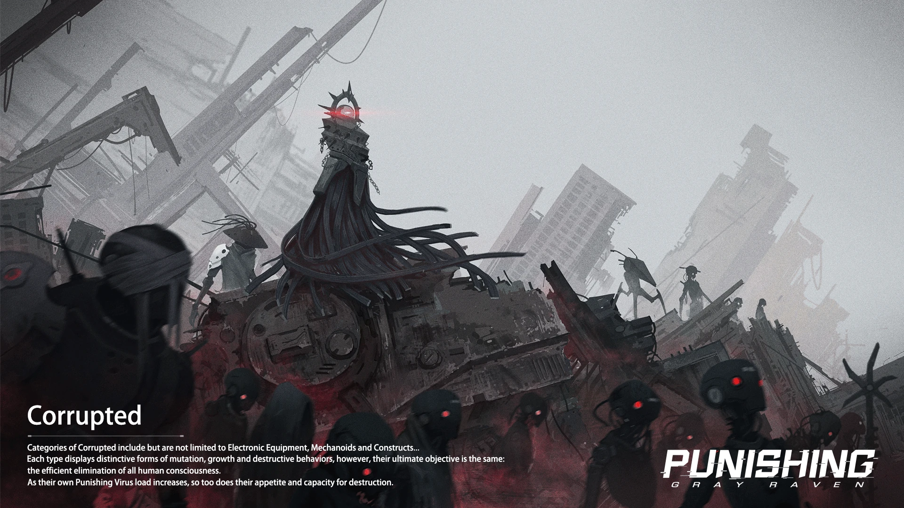
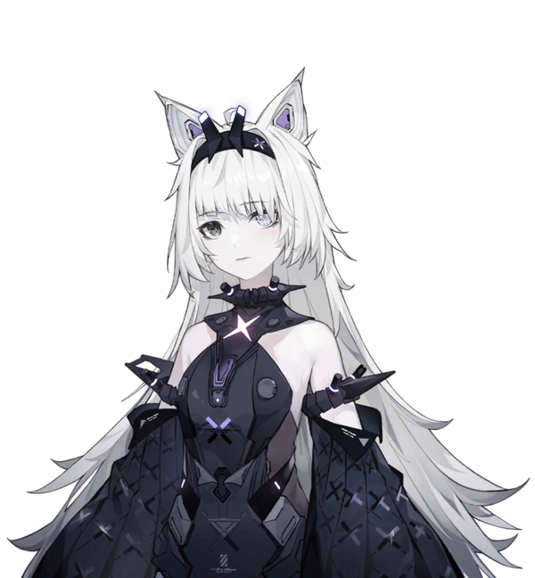
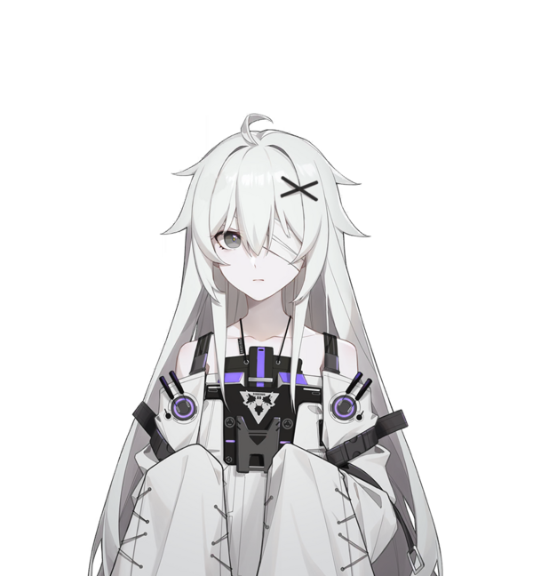

este es un juego con tematica post apocaliptica donde la humanidad a sido esta por desaparecer a causa del virus punishing/castigador el cual puede corromper maquinas, en este mundo los humanos se vieron en la necesidad de alojarse en dos lugares, en la luna como una base temporal en lo que se recupera el control de la tierra a causa del virus, y una estacion espacial llamada "babilonia", los humanos son modificados para usar cuerpos mecanicos/tecnologicos con funsiones de pelea para sovevivir en la tierra y erradicar el virus, pero es una historia muy triste, nos posicionan en un comandante, el cual es humano sin modificaciones, pero que es muy debil, la funcion es brindar apoyo a los demas humanos modificados que se les denomina "constructos" y los cuales tienen cuerpos que se les llaman "frames", estos al ser mecanicos el virus los puede corromper y volver locos y peligrosos, el comandante les brindara apoyo emocional para que no se corrompan, donde moriran seres amados pero tambien sufriran sin descanso, otros se salvaran e incluso se podra ver un romance entre algunos personajes (la mayoria muere) y ser veran amistades fuertes y muchas historias tragicas y otras con finales felices
aqui les presentare a los personajes que mas me gustan personalmente y tratare de contar lo que se ya que el juego esta en ingles y no se mucho ingles
| nombre | No.XXI (su nombre original es aurora) |
|---|---|
| nombre del frame | tiene 2 frames, No.XXI y Feral escense |
| fecha de activacion/cumpleaños | 12 de enero |
| altura | 154 cm |
| peso | 42 kg |
| fluido vital | O+ |
| feral escense |  |
| Numero 21 |  |
21 es una chica que fue usada para experimentar en un laboratorio desde muy joven, por lo que ella lejos de actuar como una persona normal, ella se comporta mas como un animal o salvaje, pero manteniendo muchos comportamientos o rasgos humanos, ella es mentalemnte inestable por lo que ella a tenido que pasar, es desconfiada, pero ella puede ser una compañera que se preocupa por los demas, suele comportarse como una niña pequeña y no puede entender algunas cosas complejas como lo son temas emocionales o temas de ligica matematica pero ella suele ser muy distante con los desconocidos, desde que la via, me quede facinado y encantado con ella, tanto que la tengo armada completa en todas sus faces, no puedo expresar el como me siento la verla o esto que siento pero sin duda, la quiero proteger sin duda, por ende no explicare mas por el momento, ella tiene una relacion con una compañera llamada "vera", es algo asi como una mama, pero no una muy buena en cuanto a resposabilidad